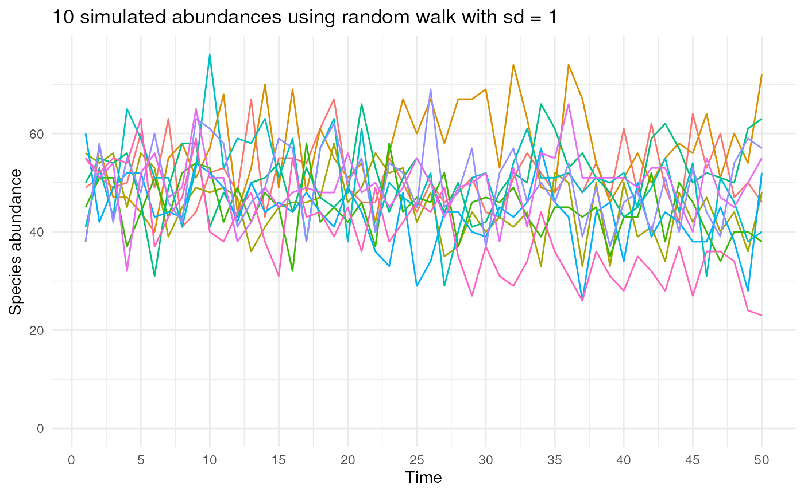
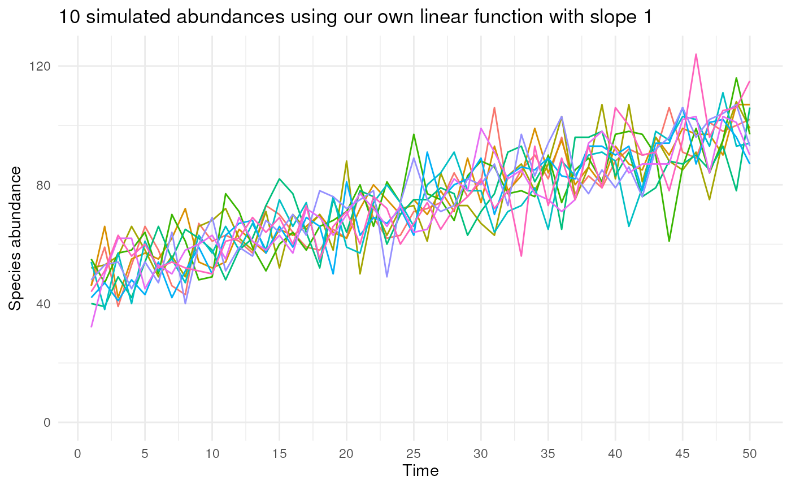

The function simulates a timeseries for the abundance of a species.
Usage
simulate_timeseries(
initial_average_occurrences = 50,
n_time_points = 1,
temporal_function = NA,
...,
seed = NA
)Arguments
- initial_average_occurrences
A positive integer value indicating the average number of occurrences to be simulated within the extend of
polygonat the first time point. This value will be used as mean of a Poisson distribution (lambda parameter).- n_time_points
A positive integer value indicating the number of time points to simulate.
- temporal_function
NA(default), or a function which generates a trend in abundance over time. Only used ifn_time_points > 1. By default, the function will samplen_time_pointstimes from a Poisson distribution with average (lambda)initial_average_occurrences. When a function is specified (e.g. the internalsimulate_random_walk()function)n_time_pointsaverage abundances (lambdas) are calculated usinginitial_average_occurrencesand any additional arguments passed. See examples.- ...
Additional argument to be passed to the
temporal_functionfunction.- seed
A positive numeric value. The seed for random number generation to make results reproducible. If
NA(the default), no seed is used.
See also
Other occurrence:
create_spatial_pattern(),
sample_occurrences_from_raster(),
simulate_random_walk()
Examples
library(ggplot2)
## 1. Use the function simulate_random_walk()
simulate_timeseries(
initial_average_occurrences = 50,
n_time_points = 10,
temporal_function = simulate_random_walk,
sd_step = 1,
seed = 123
)
#> [1] 46 52 66 54 52 43 56 38 46 43
## 2. Visualising multiple draws
# Set seed for reproducibility
set.seed(123)
# Draw n_sim abundances from Poisson distribution using random walk
n_sim <- 10
n_time_points <- 50
sd_step <- 1
list_abundances <- vector("list", length = n_sim)
# Loop n_sim times over simulate_timeseries()
for (i in seq_len(n_sim)) {
abundances <- simulate_timeseries(
initial_average_occurrences = 50,
n_time_points = n_time_points,
temporal_function = simulate_random_walk,
sd_step = sd_step
)
list_abundances[[i]] <- data.frame(
time = seq_along(abundances),
abundance = abundances,
sim = i
)
}
# Combine list of dataframes
data_abundances <- do.call(rbind.data.frame, list_abundances)
# Plot the simulated abundances over time using ggplot2
ggplot(data_abundances, aes(x = time, y = abundance, colour = factor(sim))) +
geom_line() +
labs(
x = "Time", y = "Species abundance",
title = paste(
n_sim, "simulated abundances using random walk",
"with sd =", sd_step
)
) +
scale_y_continuous(limits = c(0, NA)) +
scale_x_continuous(breaks = seq(0, n_time_points, 5)) +
theme_minimal() +
theme(legend.position = "")

## 3. Using your own function
# You can also specify your own trend function, e.g. this linear function
my_own_linear_function <- function(
initial_average_occurrences = initial_average_occurrences,
n_time_points = n_time_points,
coef) {
# Calculate new average abundances over time
time <- seq_len(n_time_points) - 1
lambdas <- initial_average_occurrences + (coef * time)
# Identify where the lambda values become 0 or lower
zero_or_lower_index <- which(lambdas <= 0)
# If any lambda becomes 0 or lower, set all subsequent lambdas to 0
if (length(zero_or_lower_index) > 0) {
zero_or_lower_indices <- zero_or_lower_index[1]:n_time_points
lambdas[zero_or_lower_indices] <- 0
}
# Return average abundances
return(lambdas)
}
# Set seed for reproducibility
set.seed(123)
# Draw n_sim abundances from Poisson distribution using our own function
n_sim <- 10
n_time_points <- 50
slope <- 1
list_abundances <- vector("list", length = n_sim)
# Loop n_sim times over simulate_timeseries()
for (i in seq_len(n_sim)) {
abundances <- simulate_timeseries(
initial_average_occurrences = 50,
n_time_points = n_time_points,
temporal_function = my_own_linear_function,
coef = slope
)
list_abundances[[i]] <- data.frame(
time = seq_along(abundances),
abundance = abundances,
sim = i
)
}
# Combine list of dataframes
data_abundances <- do.call(rbind.data.frame, list_abundances)
# Plot the simulated abundances over time using ggplot2
ggplot(data_abundances, aes(x = time, y = abundance, colour = factor(sim))) +
geom_line() +
labs(
x = "Time", y = "Species abundance",
title = paste(
n_sim, "simulated abundances using our own linear function",
"with slope", slope
)
) +
scale_y_continuous(limits = c(0, NA)) +
scale_x_continuous(breaks = seq(0, n_time_points, 5)) +
theme_minimal() +
theme(legend.position = "")
